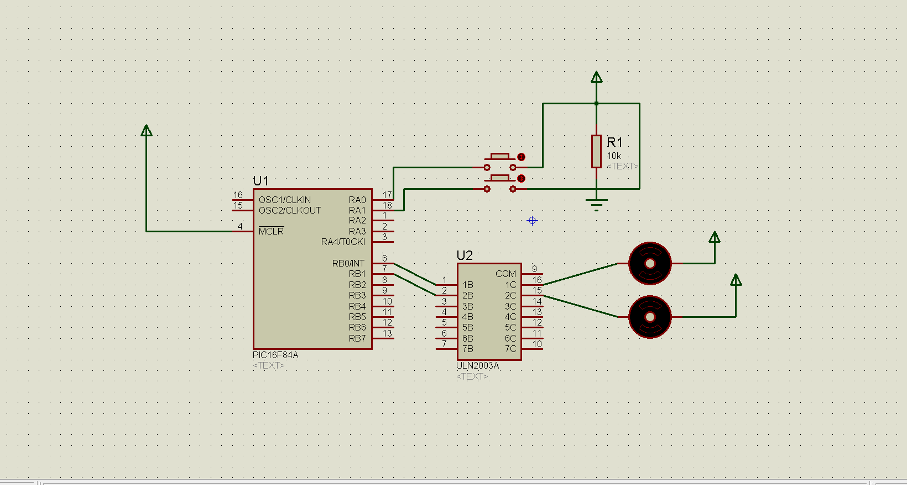

QUIZ
program YOURNAME_QUIZ
mainloop:
trisb = 0
portb = 0
trisa = %11111111
portb = %00110000
delay_ms(200)
if porta.0 = 1 then
goto switch1
else if porta.1 = 1 then
goto switch2
end if
goto mainloop
switch1:
portb =%00010101
delay_ms(200)
if porta.0 = 0 then
goto mainloop
end if
if porta.1 = 1 then
goto switch3
else
goto switch1
switch2:
portb = %00101010
delay_ms(200)
if porta.1 = 0 then
goto mainloop
else if porta.0 = 1 then
goto switch3
end if
goto switch2
switch3:
portb=%00001111
delay_ms(2000)
if porta.0 = 0 then
goto switch2
end if
if porta.1 = 0 then
goto switch1
else
goto mainloop
end if
end if
end if
end if
end.